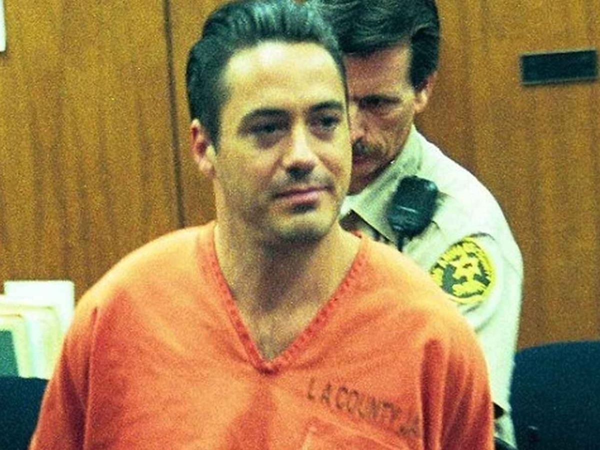
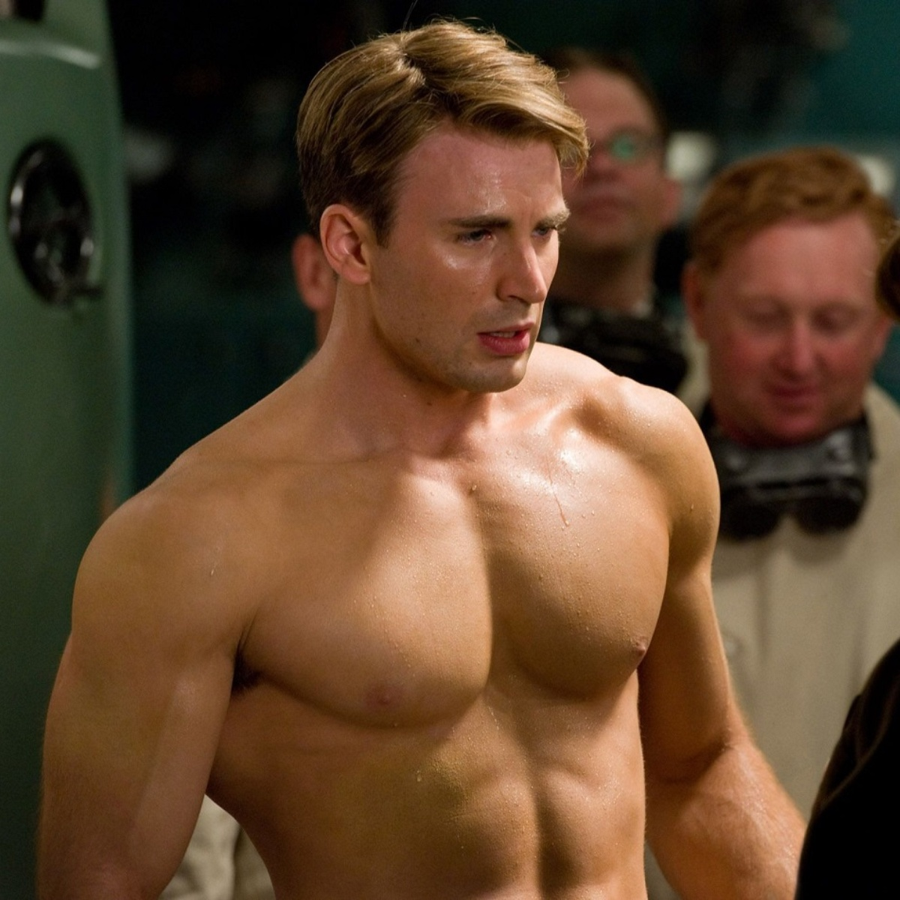
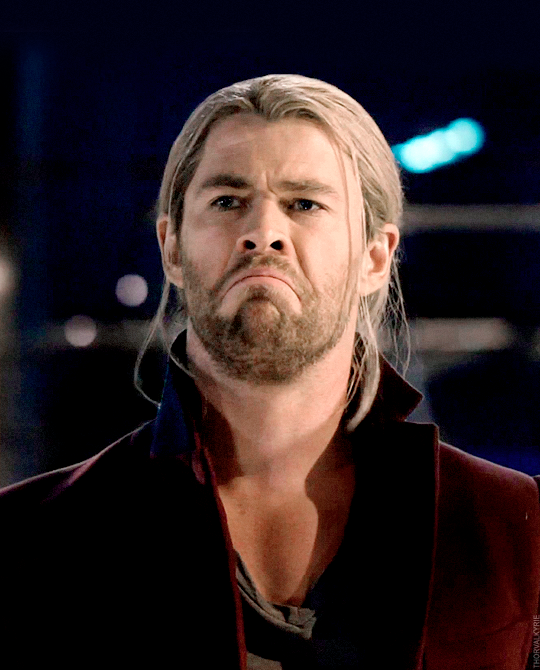

PELICULAS
El Universo cinematográfico de Marvel (MCU; en inglés, Marvel Cinematic Universe) es una franquicia de medios y un universo compartido, centrada en una serie de películas de superhéroes producidas independientemente por Marvel Studios. Las películas están basadas en personajes que aparecen en los cómics estadounidenses publicados por Marvel Comics. La franquicia también incluye series de televisión, cortometrajes, series digitales y literatura. El universo compartido, al igual que el Universo Marvel original en los cómics, se estableció mediante cruce de elementos, escenarios, elenco y personajes comunes de la trama.

MARVEL AVENGERS Endgame
La primera película del MCU es Iron Man (2008), que comenzó las películas de la Fase Uno culminando en la película cruzada The Avengers (2012). La Fase Dos comenzó con Iron Man 3 (2013) y concluyó con Ant-Man (2015). La Fase Tres comenzó con Captain America: Civil War (2016) y concluyó con Spider-Man: Lejos de casa (2019). Las primeras tres fases de la franquicia se conocen colectivamente como «La Saga del Infinito».1 Las películas de la Fase Cuatro comenzaron con Black Widow (2021).
REPARTO DE LOS ACTORES
Ahora bien, seguramente la forma en la que hemos visto estas historias protagonizadas por personajes como Capitán América (Chris Evans), Viuda Negra (Scarlett Johansson), Iron Man (Robert Downey Jr), Capitana Marvel (Brie Larson), Hulk (Mark Ruffalo), Thor (Chris Hemsworth), Black Panther (Chadwick Boseman) y compañía haya sido siguiendo el orden en el que fueron estrenadas en las salas de cine.
ROBERT DOWNEY JR.
Robert John Downey Jr. es un actor, actor de voz, productor y cantante estadounidense. Inició su carrera como actor a temprana edad apareciendo en varios filmes dirigidos por su padre, Robert Downey Sr., y en su infancia estudió actuación en varias academias de Nueva York.
Downey alcanzó un auge en su carrera al interpretar al personaje de Iron Man en el Universo cinematográfico de Marvel, protagonizando las películas Iron Man (2008), Iron Man 2 (2010), The Avengers (2012), Iron Man 3 (2013), Avengers: Age of Ultron (2015), Capitán América: Civil War (2016), Avengers: Infinity War (2018) y Avengers: Endgame (2019), que se convirtieron en grandes éxitos en la taquilla, siendo de las películas más exitosas de la historia. Gracias a dicho papel, ha sido uno de los actores mejores pagados de la industria del cine, con la revista Forbes estimando ganancias de más de $250 millones solo con su participación en las películas de Marvel.
CHRIS EVANS
Christopher Robert Evans (Boston, 13 de junio de 1981), conocido simplemente como Chris Evans, es un actor, actor de voz, director y productor estadounidense. Criado en el pueblo de Sudbury, mostró interés a temprana edad por la actuación y se mudó a Nueva York para estudiar teatro luego de terminar la secundaria. Debutó como actor en 1997 al aparecer en un cortometraje educativo y años más tarde, en el 2000, protagonizó la serie Opposite Sex.
Evans interpretó a Antorcha Humana en la película Los 4 Fantásticos (2005) y su secuela Los 4 Fantásticos y Silver Surfer (2007), que se convirtieron en sus primeros éxitos en taquilla. Luego de varios años protagonizando comedias y fantasías poco exitosas, ganó reconocimiento internacional por interpretar a Steve Rogers / Capitán América en el Universo Cinematográfico de Marvel, protagonizando Captain America: The First Avenger (2011), The Avengers (2012), Captain America: The Winter Soldier (2014), Avengers: Age of Ultron (2015), Captain America: Civil War (2016), Avengers: Infinity War (2018) y Avengers: Endgame (2019), que recibieron elogios de la crítica y fueron éxitos en taquilla. En 2020 volvió a la televisión protagonizando la miniserie Defending Jacob, donde también fue productor ejecutivo.
SCARLETT JOHANSSON
Scarlett Ingrid Johansson (Nueva York, 22 de noviembre de 1984) es una actriz, cantante y modelo estadounidense. Comenzó a mostrar intereses por la música y la actuación desde temprana edad, y a lo largo de su infancia y adolescencia se formó en distintos institutos como actriz. Tras tener varios papeles secundarios en distintas producciones, obtuvo su primer protagónico a los once años con la película Manny & Lo (1996), a la que luego le siguieron The Horse Whisperer (1998) y Ghost World (2001), actuaciones que le valieron elogios de la crítica.
Johansson logró mayor reconocimiento a nivel mundial al interpretar a Black Widow en el Universo cinematográfico de Marvel, con apariciones en Iron Man 2 (2010), The Avengers (2012), Captain America: The Winter Soldier (2014), Avengers: Age of Ultron (2015), Captain America: Civil War (2016), Avengers: Infinity War (2018), Avengers: Endgame (2019) y hasta su propia película Black Widow (2021) que tuvieron críticas positivas y fueron éxitos en taquilla.
CHRIS HEMSWORTH
Christopher Hemsworth (Melbourne; 11 de agosto de 1983), conocido simplemente como Chris Hemsworth, es un actor, actor de voz y productor australiano. Criado en la comunidad de Bulman, al norte de Australia, mostró interés por la actuación motivado por su hermano mayor e inició su carrera en 2002 con apariciones menores en series de televisión de su país. Años más tarde, se mudó a Sídney para conseguir mejores oportunidades y logró reconocimiento tras unirse al elenco principal de Home and Away, serie para la que grabó 189 episodios en cuestión de tres años.
Tras su éxito en la televisión australiana, se mudó a los Estados Unidos y debutó en el cine con la película Star Trek (2009). Poco después logró gran reconocimiento a nivel mundial con su papel como Thor en el Universo cinematográfico de Marvel, donde protagonizó las películas Thor (2011), The Avengers (2012), Thor: The Dark World (2013), Avengers: Age of Ultron (2015), Thor: Ragnarok (2017), Avengers: Infinity War (2018) y Avengers: Endgame (2019), que fueron éxitos en taquilla y le valieron críticas positivas. Hemsworth también participó en comedias como Vacation (2015), Ghostbusters (2016) y Men in Black: International (2019), además de películas bélicas como 12 Strong (2018) y Extraction (2020)